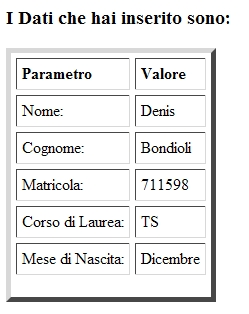

Torna alla pagina di Tecnologie Web
:: Laboratorio 4 ::
NOTA BENE:
- Il server utilizzato per ospitare gli esercizi svolti in laboratorio supporta la versione 1.5 di Java e non le successive, QUINDI i file degli esercizi devono essere compilati con la 1.5 perché se vengono compilati con le versioni aggiornate (ora la 1.6) non funzionano. In Eclipse è possibile nelle opzioni specificare quale versione di Java utilizzare durante la compilazione. Per riconoscere il problema in output Tomcat restituisce un messaggio di errore 500.
Il problema ovviamente non sussiste se si lavora in locale.
- Ricordarsi di caricare la libreria esterna servlet-api.jar, altrimenti non funziona nulla.
Scrivere una servlet che produca come output un semplice biglietto da visita, contenente nome e cognome, una linea HTML orizzontale (<HR>), matricola e corso di laurea. La servlet viene chiamata da una pagina HTML in cui è presente un bottone per visualizzare i dati.
SOLUZIONE
Il file HTML esercizio1.html è il seguente:
<html>
<head>
<title>Esercizo 1</title>
</head>
<body>
<h3>Clicca il bottone per vedere il tuo biglietto da visita</h3>
<form action="esercizio1.do" method="POST">
<input type="submit" value="Mostra chi sono e che cosa studio">
</form>
</body>
</html>
Il file web.xml, che riporta l'elenco delle servlet presenti, è il seguente:
<?xml version="1.0" encoding="UTF-8"?>
<web-app xmlns="http://java.sun.com/xml/ns/j2ee" version="2.4">
<servlet>
<servlet-name>esercizio1</servlet-name>
<servlet-class>esercizio1</servlet-class>
</servlet>
<servlet-mapping>
<servlet-name>esercizio1</servlet-name>
<url-pattern>/esercizio1.do</url-pattern>
</servlet-mapping>
</web-app>
Nel servlet-mapping potremmo scegliere quello che vogliamo, ma a causa dell'installazione congiunta di Apache e Tomcat su jsp.dti.unimi.it le servlet devono essere invocate tramite l'estensione convenzionale .do. Questo non è di regola necessario.
Ricordiamo che il file web.xml deve essere inserito nella cartella WEB-INF dell'applicazione.
Il file web.xml riporta tutte le servlet presenti, quindi i dati della servlet di questo esercizio possono essere aggiunti a quelli degli altri esercizi, semplicemente andando ad aggiungere i tag xml con i rispettivi valori, che in questo caso per semplicità hanno tutti valore esercizio1.
Il file Java Esercizio1.java invece è:
import java.io.*;
import javax.servlet.*;
import javax.servlet.http.*;
public class Esercizio1 extends HttpServlet {
public void doPost(HttpServletRequest request, HttpServletResponse response)
throws IOException, ServletException {
response.setContentType("text/html");
PrintWriter out = response.getWriter();
out.println("<html>");
out.println("<head>");
out.println("<title>Checkbox multipli</title>");
out.println("</head>");
out.println("<body>");
out.println("<h3>I tuoi dati sono:</h3>");
out.println("Nome: Denis");
out.println("<br />");
out.println("Cognome: Bondioli");
out.println("<hr>");
out.println("Matricola: 711598");
out.println("<br />");
out.println("Corso di Studi: TS");
out.println("</body>");
out.println("</html>");
}
}
Il file .java non è necessario caricarlo sul server, anche se consigliabile per andare a prenderlo ed editarlo in un secondo momento, l'importante è caricare il file compilato .class in WEB-INF -> classes
Risultato:
Estendere il precedente codice, aggiungendo una form di introduzione-dati nell’HTML in cui, oltre a inserire le informazioni dell’esercizio precedente, sia presente una combobox in cui specificate il vostro mese di nascita. Come output, dovrete visualizzare in forma tabellare le informazioni inserite.
SOLUZIONE
Il file HTML esercizio2.html è il seguente:
<html>
<head>
<title>Who are you?</title>
</head>
<body>
<h3>Per cortesia inserire i propri dati:</h3>
<form id="form1" name="form1" method="post" action="esercizio2.do">
<p>Nome:
<input type="text" name="nome" id="nome" />
Cognome:
<input type="text" name="cognome" id="cognome" />
</p>
<p>Matricola:
<input type="text" name="matr" id="matr" />
Corso di Laurea
<input type="text" name="corso" id="corso" />
</p>
<p>Mese di Nascita:
<select name="mese" id="mese">
<option value="Gennaio">Gennaio</option>
<option value="Febbraio">Febbraio</option>
<option value="Marzo">Marzo</option>
<option value="Aprile">Aprile</option>
<option value="Maggio">Maggio</option>
<option value="Giugno">Giugno</option>
<option value="Luglio">Luglio</option>
<option value="Agosto">Agosto</option>
<option value="Settembre">Settembre</option>
<option value="Ottobre">Ottobre</option>
<option value="Novembre">Novembre</option>
<option value="Dicembre">Dicembre</option>
</select>
</p>
<p>
<input type="submit" name="invia" id="invia" value="Invia" />
</p>
</form>
</body>
</html>
Il file web.xml, che riporta l'elenco delle servlet presenti, è il seguente:
<?xml version="1.0" encoding="UTF-8"?>
<web-app xmlns="http://java.sun.com/xml/ns/j2ee" version="2.4">
<servlet>
<servlet-name>Esercizio1</servlet-name>
<servlet-class>Esercizio1</servlet-class>
</servlet>
<servlet-mapping>
<servlet-name>Esercizio1</servlet-name>
<url-pattern>/esercizio1.do</url-pattern>
</servlet-mapping>
<servlet>
<servlet-name>Esercizio2</servlet-name>
<servlet-class>Esercizio2</servlet-class>
</servlet>
<servlet-mapping>
<servlet-name>Esercizio2</servlet-name>
<url-pattern>/esercizio2.do</url-pattern>
</servlet-mapping>
</web-app>
Come già accennato precedentemente nel file web.xml abbiamo lasciato anche i dati dell'altro esercizio.
Il file Esercizio2.java invece è:
import java.io.*;
import javax.servlet.*;
import javax.servlet.http.*;
public class Esercizio2 extends HttpServlet {
public void doPost(HttpServletRequest request, HttpServletResponse response)
throws IOException, ServletException {
response.setContentType("text/html");
PrintWriter out = response.getWriter();
out.println("<html>");
out.println("<head>");
out.println("<title>Dati Personali</title>");
out.println("</head>");
out.println("<body>");
out.println("<h3>I Dati che hai inserito sono:</h3>");
out.println("<table border=\"5\" cellspacing=\"5\" cellpadding=\"5\">");
out.println("<tr> <td>");
out.println("<b>Parametro</b>");
out.println("<td>");
out.println("<b>Valore</b>");
out.println("<tr> <td>");
out.println("Nome:");
String nome = request.getParameter("nome");
out.println("<td>" + nome);
out.println("<tr> <td>");
out.println("Cognome:");
String cognome = request.getParameter("cognome");
out.println("<td>" + cognome);
out.println("<tr> <td>");
out.println("Matricola:");
String matricola = request.getParameter("matr");
out.println("<td>" + matricola);
out.println("<tr> <td>");
out.println("Corso di Laurea:");
String corso = request.getParameter("corso");
out.println("<td>" + corso);
out.println("<tr> <td>");
out.println("Mese di Nascita:");
String mese = request.getParameter("mese");
out.println("<td>" + mese);
out.println("<tr> <td>");
out.println("</body>");
out.println("</html>");
}
}
Risultato:
